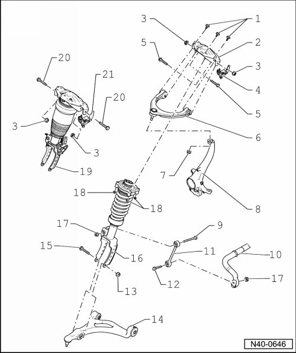
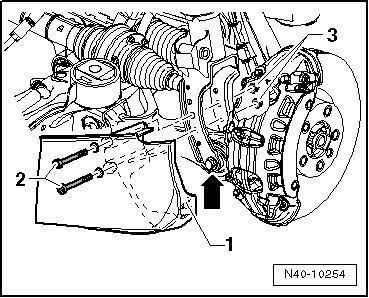

Front Suspension
Front Suspension Assembly Overview
• If components with bonded rubber bushings were replaced or bolts/nuts on these components were loosened, corresponding wheel bearing must be lifted into curb weight position. Refer to --> [ Lifting Wheel Bearing to Curb Weight Position ] Front Suspension (AWD).

1 Bolt
• M10 x 37.
• 50 Nm + 90° additional turn.
• Always replace after removal.
2 Mounting bracket
3 Self locking nut
• M10.
• 50 Nm + 90° additional turn.
• Always replace after removal.
4 Left front level control system sensor (G78) and right front level control sensor (G289) with bracket
• Left front level control system sensor (G78) and right front level control sensor (G289) removing and installing, refer to --> [ Level Control System Sensor ] Level Control System Sensor.
• Can be tested in "Guided Fault Finding" using the vehicle diagnosis, testing and information system (VAS 5051B).
• Bracket removing and installing, refer to --> [ Level Control System Sensor Bracket ] Level Control System Sensor Bracket.
5 Bolt
• M10 x 70.
• Always replace after removal.
6 Upper control arm
• Can only be removed together with mounting bracket.
• Conical pin must be free of grease and oil.
• If necessary, clean using dry cloth, do not use cleaning agents.
7 Self locking nut
• M12 x 1.5.
• 95 Nm.
• Always replace after removal.
8 Wheel bearing housing
• Different versions for 16" and 17", 18" and 18" plus wheels.
• Conical bores must be free of grease and oil.
• If necessary, clean using dry cloth, do not use cleaning agents.
9 Bolt
• M12 x 1.5 x 125.
• 110 Nm.
10 Stabilizer bar
11 Coupling rod
12 Bolt
• M12 x 1.5 x 60.
13 Self locking nut
• M12 x 1.5.
• Always replace after removal.
14 Lower control arm
• Conical pin must be free of grease and oil.
• If necessary, clean using dry cloth, do not use cleaning agents.
15 Bolt
• M14 x 1.5 x 102.
• 150 Nm + 90° additional turn.
• Always replace after removal.
16 Strut
• Removing and installing, refer to --> [ Strut ] Strut.
• When removing, leave mounting bracket on vehicle.
17 Self locking nut
• M12 x 1.5.
• 110 Nm.
• Always replace after removal.
18 Self locking nut
• M8.
• 30 Nm.
• Always replace after removal.
19 Air spring damper
• Removing and installing, refer to --> [ Air Spring Damper ] Air Spring Damper.
• Troubleshooting level control system, refer to --> [ Air Spring Damper and Level Control System, Troubleshooting ] Air Spring Damper and Level Control System, Troubleshooting.
• Can only be removed together with mounting bracket.
• Mounting bracket must not be separated from air spring shock absorber.
20 Bolt
• M10 x 70.
• 50 Nm + 90° additional turn.
• Always replace after removal.
21 Left front level control system sensor (G78) and right front level control sensor (G289) with bracket
• Left front level control system sensor (G78) and right front level control sensor (G289) removing and installing, refer to --> [ Level Control System Sensor, with Air Spring Damper ] Level Control System Sensor, with Air Spring Damper.
• Can be tested in "Guided Fault Finding" using the vehicle diagnosis, testing and information system (VAS 5051B).
• Bracket removing and installing, refer to --> [ Vehicle Level Sensor Bracket, with Air Spring Damper ] Vehicle Level Sensor Bracket, with Air Spring Damper.
Air Guide Element for Vehicles with 18" Plus Wheels

• Engage the hook - 1 - on the strut - arrow -.
• Install the bolts - 2 - and tighten the nuts - 3 - to 10 Nm.